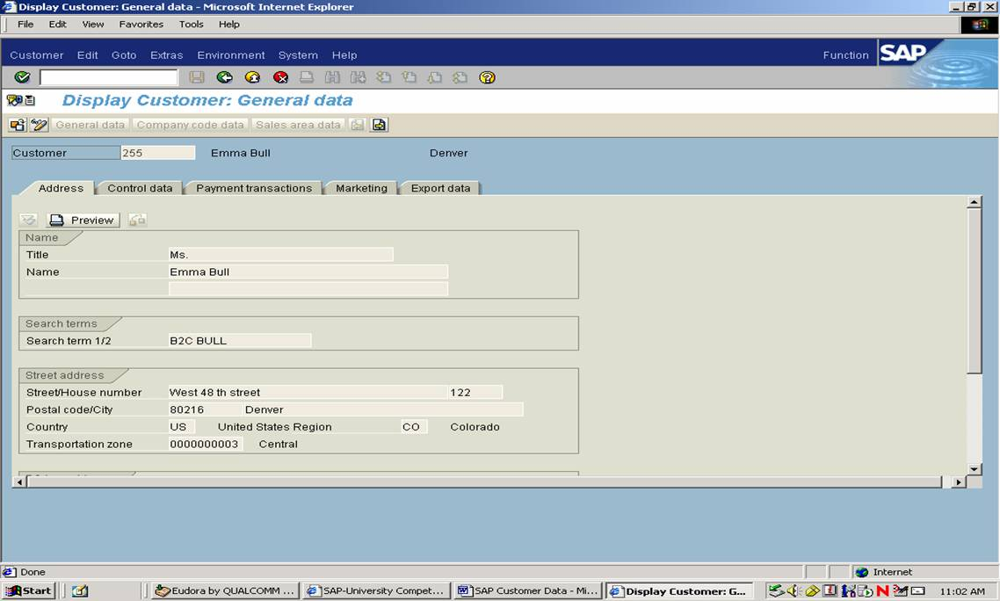
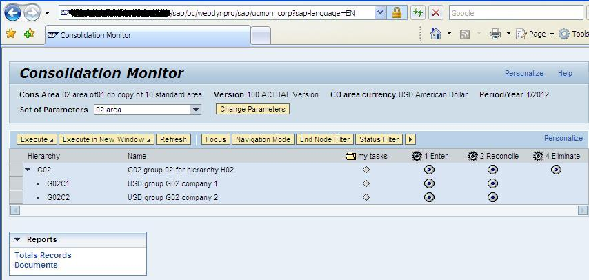
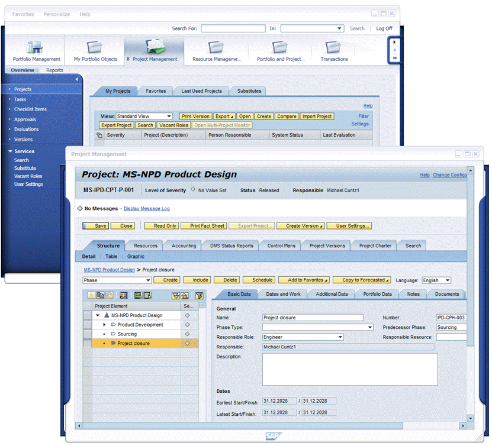
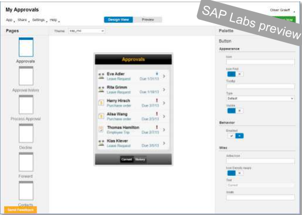

SAPUI5
UI Development Toolkit for HTML5
The dull History of SAP User Interfaces
ABAP Dynpro
Web Dynpro
NWBC
Others
- Enterprise portal
- Business Server Pages
- Other Uis for various tools
What happened elsewhere?
Consumerization of IT
The tendency of new information technology to emerge in the consumer market and then migrate into the enterprise
SAPUI5
A framework for developing user interfaces based on HTML and Javascript
SAP's vision
"Provide the leading user experience for business applications"SAP UI Road Map
"The standard User Interface Control library in all their future applications that need a consumer grade User Experience"Björn Goerke, SAP VP Technology & Innovation Platform Core
Desktop and mobile
Gateway and OData
App Designer
Some examples
Table
Full sizeGraphs
Full sizeDemokit
Explore more UI elements and examples here
Fiori
- 25 new apps for frequent SAP functions
- Runs on all devices
- Built with SAPUI5
- Released May 2013
- Link